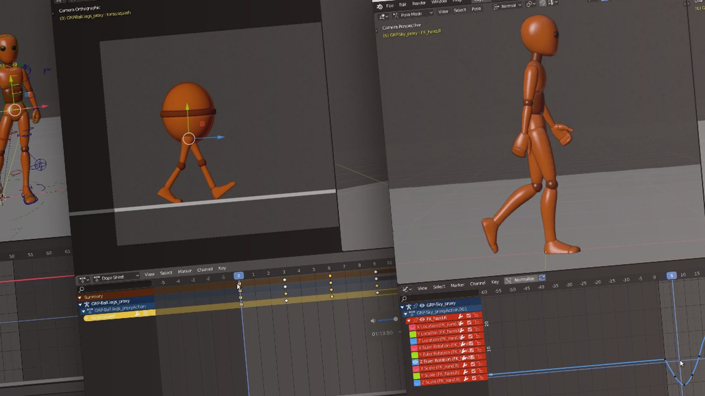

"Red Line"
Animaciones
¿Qué es una animación en diseño?
Una animación en diseño es la creación de movimiento en dibujos, imágenes o gráficos utilizando técnicas digitales. Se trata de una técnica que se utiliza para dar vida y movimiento a los diseños, ofreciendo una experiencia visual más atractiva y dinámica para el espectador. Las animaciones se pueden crear mediante software de animación y se pueden utilizar en diversos tipos de proyectos, como vídeos, páginas web, presentaciones, publicidad, entre otros. Algunas técnicas de animación en diseño incluyen la animación de objetos, personajes, tipografías y efectos especiales.
EJEMPLOS


¿Cómo es estudiar animación??
Mas contenido...
Mapa de ubicación